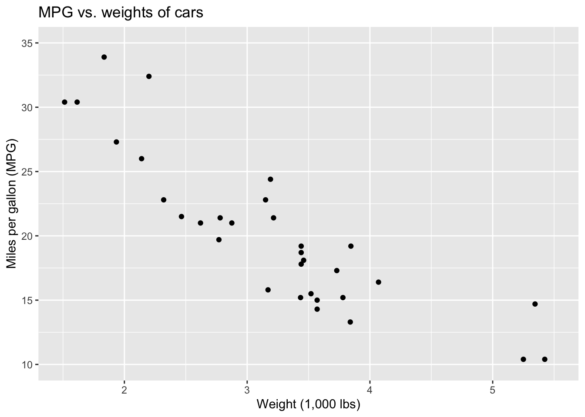
The Language of Models
Lecture 13
While you wait…
Go to your
aeproject in RStudio.Make sure all of your changes up to this point are committed and pushed, i.e., there’s nothing left in your Git pane.
Click Pull to get today’s application exercise file: ae-11-modeling-fish.qmd.
Wait till the you’re prompted to work on the application exercise during class before editing the file.
Announcements
No office hours today
Lab Thursday: Project proposals/identifying data sets of interest.
Midterm 1 is done!
The class is halfway over!
Before:
Plotting and summary statistics
Useful, but… a little subjective?
Now:
- Learn statistical tools for quantifying relationships
- Describing relationships
- Prediction and classification
- Uncertainty quantification
Prediction / classification
Goals
- What is a model?
- Why do we model?
- What is correlation?
Let’s drive a Tesla!
Semi or garage?
i love how Tesla thinks the wall in my garage is a semi. 😅
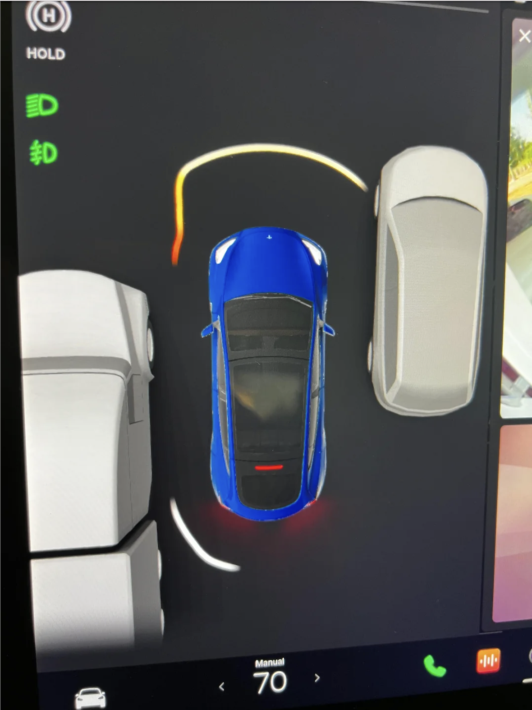
Source: Reddit
Semi or garage?
New owner here. Just parked in my garage. Tesla thinks I crashed onto a semi.
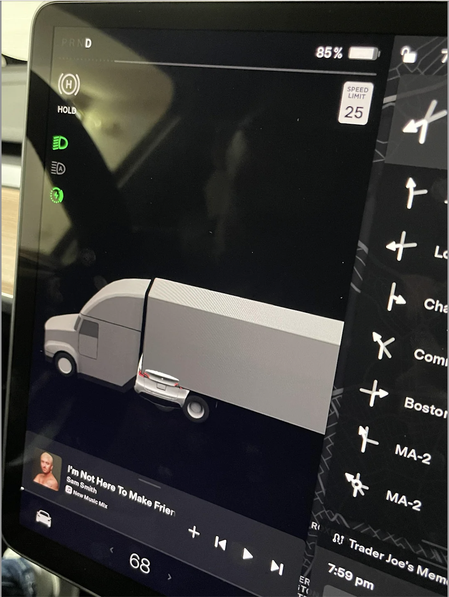
Source: Reddit
Car or trash?
Tesla calls Mercedes trash
Source: Reddit
Description
Leisure, commute, physical activity and BP
Byambasukh, Oyuntugs, Harold Snieder, and Eva Corpeleijn. “Relation between leisure time, commuting, and occupational physical activity with blood pressure in 125 402 adults: the lifelines cohort.” Journal of the American Heart Association 9.4 (2020): e014313.
Leisure, commute, physical activity and BP
Goal: To investigate the associations of different domains of daily‐life physical activity, such as commuting, leisure‐time, and occupational, with BP level and the risk of having hypertension.
Leisure, commute, physical activity and BP
Goal: To investigate the associations of different domains of daily-life physical activity, such as commuting, leisure-time, and occupational, with BP level and the risk of having hypertension.
Methods and Results: In the population-based Lifelines cohort (N=125,402), MVPA was assessed by the Short Questionnaire to Assess Health-Enhancing Physical Activity, a validated questionnaire in different domains such as commuting, leisure-time, and occupational PA.
Leisure, commute, physical activity and BP
Goal: To investigate the associations of different domains of daily-life physical activity, such as commuting, leisure-time, and occupational, with BP level and the risk of having hypertension.
Methods and Results: In the population-based Lifelines cohort (N=125,402), MVPA was assessed by the Short Questionnaire to Assess Health-Enhancing Physical Activity, a validated questionnaire in different domains such as commuting, leisure-time, and occupational PA. Commuting-and-leisure-time MVPA was associated with BP in a dose-dependent manner.
Leisure, commute, physical activity and BP
Goal: To investigate the associations of different domains of daily-life physical activity, such as commuting, leisure-time, and occupational, with BP level and the risk of having hypertension.
Methods and Results: In the population-based Lifelines cohort (N=125,402), MVPA was assessed by the Short Questionnaire to Assess Health-Enhancing Physical Activity, a validated questionnaire in different domains such as commuting, leisure-time, and occupational PA. Commuting-and-leisure-time MVPA was associated with BP in a dose-dependent manner. β Coefficients (95% CI) from linear regression analyses were −1.64 (−2.03 to −1.24), −2.29 (−2.68 to −1.90), and −2.90 (−3.29 to −2.50) mm Hg systolic BP for the low, middle, and highest tertile of MVPA compared with “No MVPA” as the reference group after adjusting for age, sex, education, smoking and alcohol use. Further adjustment for body mass index attenuated the associations by 30% to 50%, but more MVPA remained significantly associated with lower BP and lower risk of hypertension. This association was age dependent. β Coefficients (95% CI) for the highest tertiles of commuting-and-leisure-time MVPA were −1.67 (−2.20 to −1.15), −3.39 (−3.94 to −2.82) and −4.64 (−6.15 to −3.14) mm Hg systolic BP in adults <40, 40 to 60, and >60 years, respectively.
Leisure, commute, physical activity and BP
Goal: To investigate the associations of different domains of daily-life physical activity, such as commuting, leisure-time, and occupational, with BP level and the risk of having hypertension.
Methods and Results: In the population-based Lifelines cohort (N=125,402), MVPA was assessed by the Short Questionnaire to Assess Health-Enhancing Physical Activity, a validated questionnaire in different domains such as commuting, leisure-time, and occupational PA. Commuting-and-leisure-time MVPA was associated with BP in a dose-dependent manner. β Coefficients (95% CI) from linear regression analyses were −1.64 (−2.03 to −1.24), −2.29 (−2.68 to −1.90), and −2.90 (−3.29 to −2.50) mm Hg systolic BP for the low, middle, and highest tertile of MVPA compared with “No MVPA” as the reference group after adjusting for age, sex, education, smoking and alcohol use. Further adjustment for body mass index attenuated the associations by 30% to 50%, but more MVPA remained significantly associated with lower BP and lower risk of hypertension. This association was age dependent. β Coefficients (95% CI) for the highest tertiles of commuting-and-leisure-time MVPA were −1.67 (−2.20 to −1.15), −3.39 (−3.94 to −2.82) and −4.64 (−6.15 to −3.14) mm Hg systolic BP in adults <40, 40 to 60, and >60 years, respectively.
Conclusions: Higher commuting and leisure-time but not occupational MVPA were significantly associated with lower BP and lower hypertension risk at all ages, but these associations were stronger in older adults.
Modeling
Modeling cars
- What is the relationship between cars’ weights and their mileage?
- What is your best guess for a car’s MPG that weighs 3,500 pounds?
Modelling cars
Describe: What is the relationship between cars’ weights and their mileage?
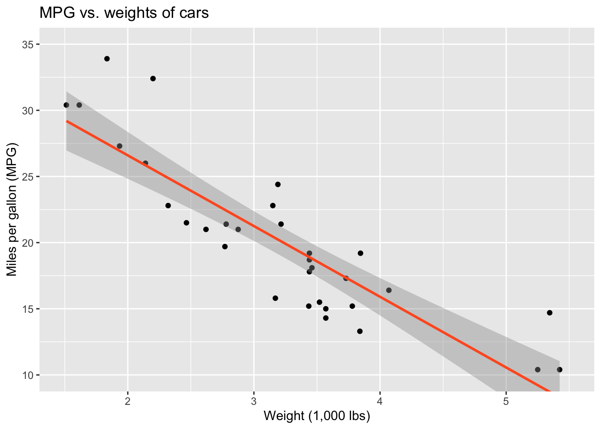
Modelling cars
Predict: What is your best guess for a car’s MPG that weighs 3,500 pounds?
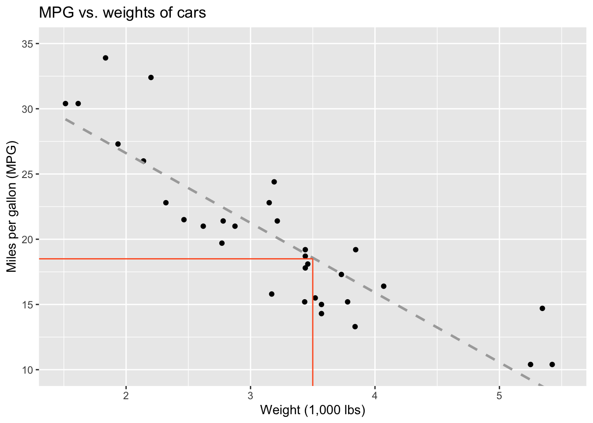
Modelling
- Use models to explain the relationship between variables and to make predictions
- For now we will focus on linear models (but there are many many other types of models too!)
What is a line?
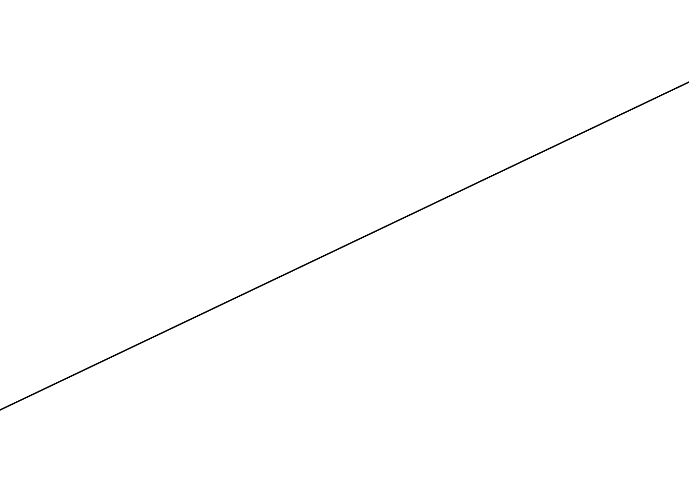
But on a plot…
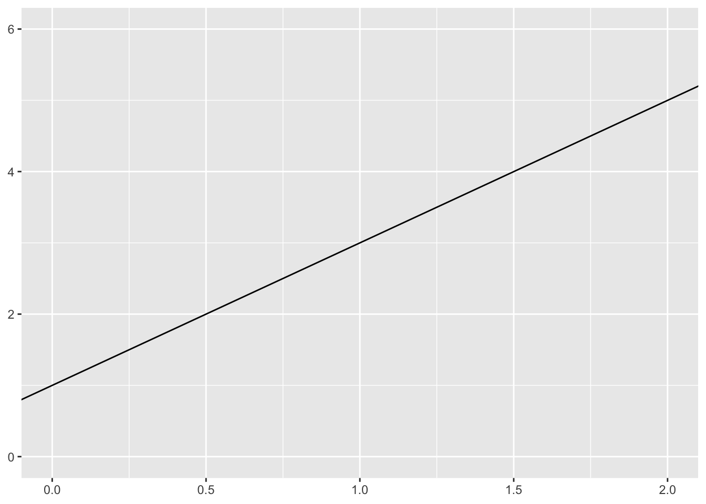
But in math terms…
\[ y = mx + b \]

Modelling vocabulary
- Predictor (explanatory variable)
- Outcome (response variable)
- Regression line
- Slope
- Intercept
- Correlation
Predictor (explanatory variable)
| mpg | wt |
|---|---|
| 21 | 2.62 |
| 21 | 2.875 |
| 22.8 | 2.32 |
| 21.4 | 3.215 |
| 18.7 | 3.44 |
| 18.1 | 3.46 |
| ... | ... |
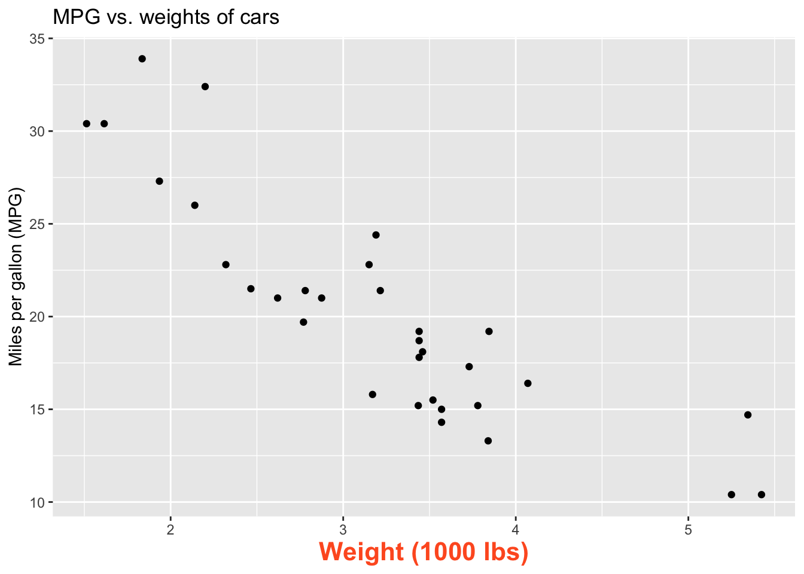
Outcome (response variable)
| mpg | wt |
|---|---|
| 21 | 2.62 |
| 21 | 2.875 |
| 22.8 | 2.32 |
| 21.4 | 3.215 |
| 18.7 | 3.44 |
| 18.1 | 3.46 |
| ... | ... |
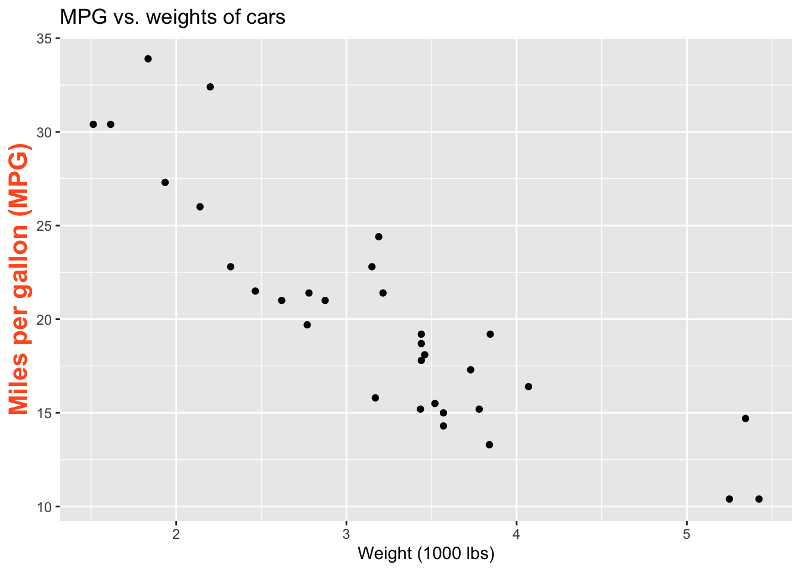
Regression line
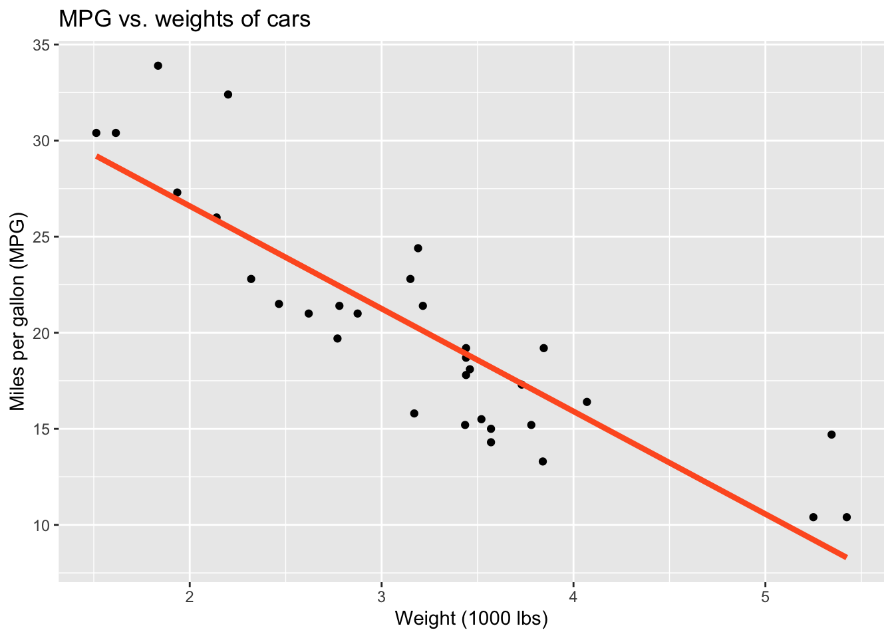
Regression line: slope

Regression line: intercept
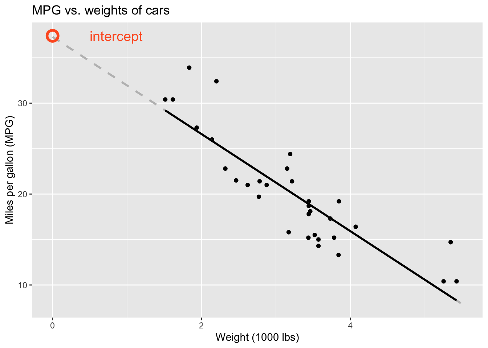
Correlation

Correlation
- Ranges between -1 and 1.
- Same sign as the slope.
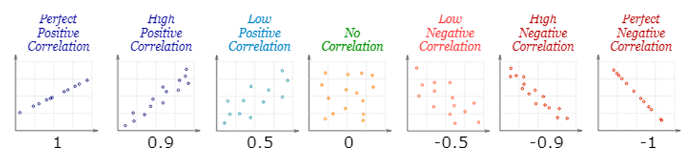
Visualizing the model
ggplot(mtcars, aes(x = wt, y = mpg)) +
geom_point()
Visualizing the model
ggplot(mtcars, aes(x = wt, y = mpg)) +
geom_point() +
geom_smooth()`geom_smooth()` using method = 'loess' and formula = 'y ~ x'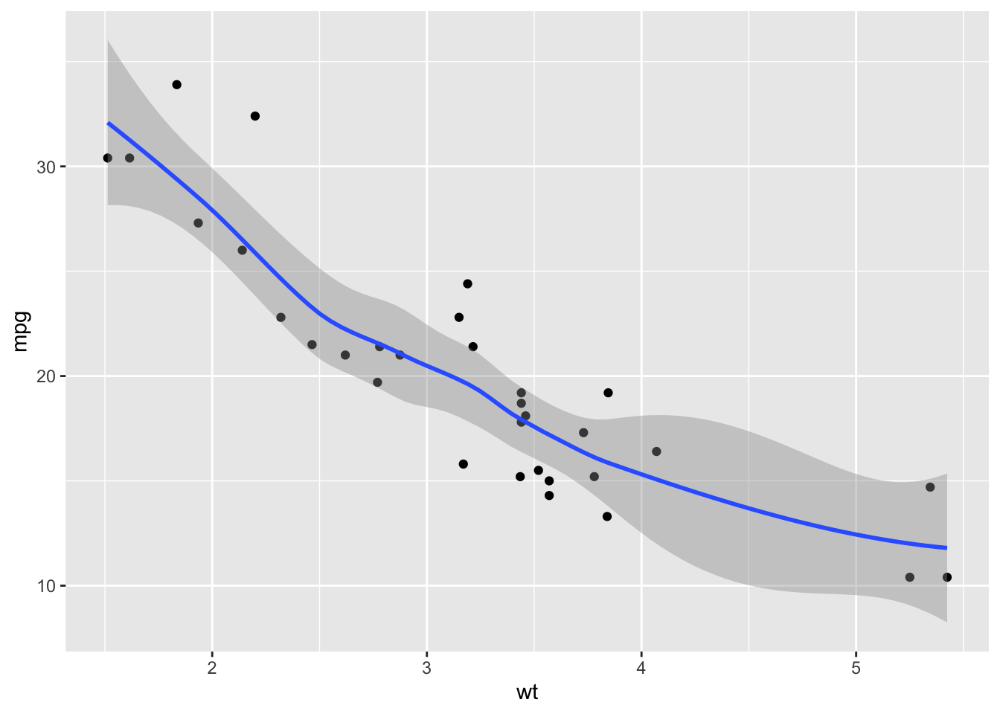
Visualizing the model
ggplot(mtcars, aes(x = wt, y = mpg)) +
geom_point() +
geom_smooth(method = "loess")`geom_smooth()` using formula = 'y ~ x'
Visualizing the model
ggplot(mtcars, aes(x = wt, y = mpg)) +
geom_point() +
geom_smooth(method = "lm")`geom_smooth()` using formula = 'y ~ x'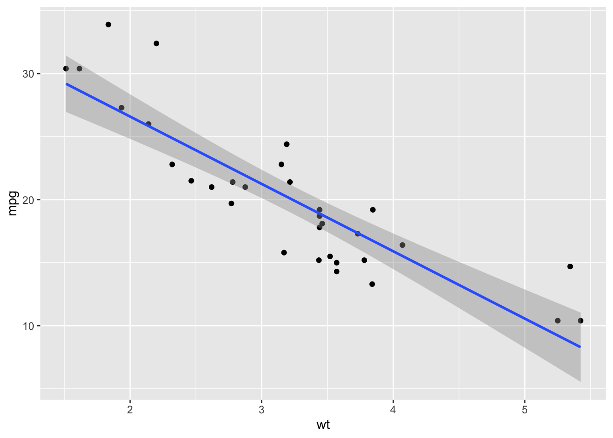
Application exercise
Follow along
ae-11-modeling-fish
Go to your ae project in RStudio.
If you haven’t yet done so, make sure all of your changes up to this point are committed and pushed, i.e., there’s nothing left in your Git pane.
If you haven’t yet done so, click Pull to get today’s application exercise file: ae-11-modeling-fish.qmd.
Work through the application exercise in class, and render, commit, and push your edits.
Data: Fish
library(tidyverse)
library(tidymodels)
fish <- read_csv("data/fish.csv")Data: Fish
fish# A tibble: 55 × 7
species weight length_vertical length_diagonal length_cross height
<chr> <dbl> <dbl> <dbl> <dbl> <dbl>
1 Bream 242 23.2 25.4 30 11.5
2 Bream 290 24 26.3 31.2 12.5
3 Bream 340 23.9 26.5 31.1 12.4
4 Bream 363 26.3 29 33.5 12.7
5 Bream 430 26.5 29 34 12.4
6 Bream 450 26.8 29.7 34.7 13.6
7 Bream 500 26.8 29.7 34.5 14.2
8 Bream 390 27.6 30 35 12.7
9 Bream 450 27.6 30 35.1 14.0
10 Bream 500 28.5 30.7 36.2 14.2
# ℹ 45 more rows
# ℹ 1 more variable: width <dbl>Visualizing the model
Goal: Analyze the relationship between fish height and weight.
Visualizing the model
Goal: Analyze the relationship between fish height and weight.
ggplot(fish, aes(x = height,
y = weight)) +
geom_point() +
labs(x = "Height (cm)",
y = "Weight (gr)")
Visualizing the model
Goal: Analyze the relationship between fish height and weight.
Where would you draw a line?
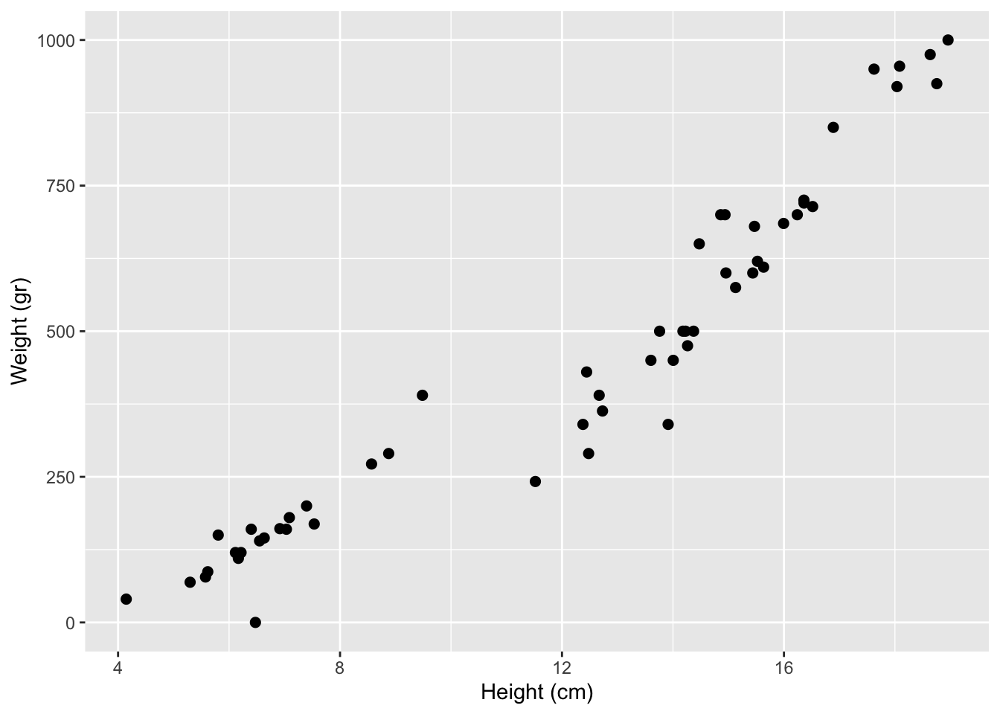
Visualizing the model
Let R draw the line for you!
ggplot(fish, aes(x = height,
y = weight)) +
geom_point() +
geom_smooth(method = "lm", se = FALSE) +
labs(x = "Height (cm)",
y = "Weight (gr)")
Visualizing the model
How can we use the line to make predictions?
Predict weight given height:
10 cm
15 cm
20 cm
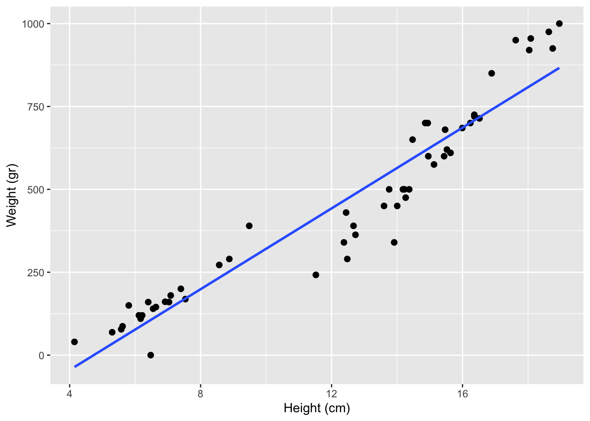
Visualizing the model
Are the predictions good?
Residual: Difference between observed and predicted value

Model Fitting
Fit your first model
fish_hw_fit <- linear_reg() |>
fit(weight ~ height, data = fish)Fit your first model
fish_hw_fit <- linear_reg() |>
fit(weight ~ height, data = fish)
fish_hw_fitparsnip model object
Call:
stats::lm(formula = weight ~ height, data = data)
Coefficients:
(Intercept) height
-288.42 60.92 Model prediction
Use model results to predict weights at heights 10cm, 15cm, and 20cm.
fish_hw_fitparsnip model object
Call:
stats::lm(formula = weight ~ height, data = data)
Coefficients:
(Intercept) height
-288.42 60.92 x <- 10
-288 + 60.92 * x[1] 321.2Model prediction: full data
Goal: Calculate predicted weights for all fish in the data.
fish_hw_aug <- augment(fish_hw_fit, new_data = fish)Model prediction: full data
Goal: Calculate predicted weights for all fish in the data.
fish_hw_aug <- augment(fish_hw_fit, new_data = fish)
fish_hw_aug# A tibble: 55 × 9
.pred .resid species weight height length_vertical length_diagonal
<dbl> <dbl> <chr> <dbl> <dbl> <dbl> <dbl>
1 413. -171. Bream 242 11.5 23.2 25.4
2 472. -182. Bream 290 12.5 24 26.3
3 466. -126. Bream 340 12.4 23.9 26.5
4 487. -124. Bream 363 12.7 26.3 29
5 470. -39.6 Bream 430 12.4 26.5 29
6 540. -90.2 Bream 450 13.6 26.8 29.7
7 575. -75.3 Bream 500 14.2 26.8 29.7
8 483. -93.4 Bream 390 12.7 27.6 30
9 565. -115. Bream 450 14.0 27.6 30
10 578. -78.2 Bream 500 14.2 28.5 30.7
# ℹ 45 more rows
# ℹ 2 more variables: length_cross <dbl>, width <dbl>Model evaluation: residuals
Goal: Visualize the residuals
fish_hw_aug |>
ggplot(aes(x = height,
y = weight)) +
geom_point() +
geom_smooth(method = "lm",
se = FALSE) +
theme_minimal() 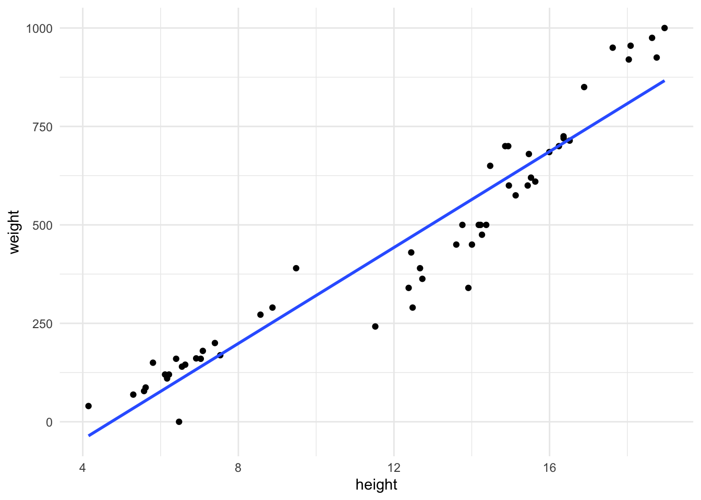
Model evaluation: residuals
Goal: Visualize the residuals
fish_hw_aug |>
ggplot(aes(x = height,
y = weight)) +
geom_point() +
geom_smooth(method = "lm",
se = FALSE) +
geom_segment(aes(xend = height,
yend = .pred)) +
theme_minimal() 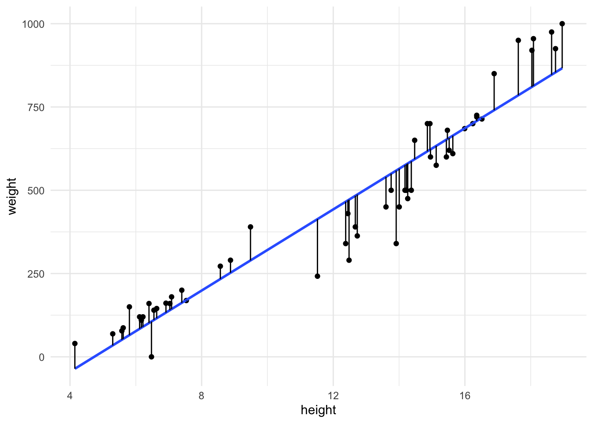
Model Summary
fish_hw_fitparsnip model object
Call:
stats::lm(formula = weight ~ height, data = data)
Coefficients:
(Intercept) height
-288.42 60.92 fish_hw_tidy <- tidy(fish_hw_fit)
fish_hw_tidy# A tibble: 2 × 5
term estimate std.error statistic p.value
<chr> <dbl> <dbl> <dbl> <dbl>
1 (Intercept) -288. 34.0 -8.49 1.83e-11
2 height 60.9 2.64 23.1 2.40e-29Correlation
Strength and direction of a linear relationship. It’s bounded by -1 and 1.
Correlation
Adding a 3rd Variable
Does the relationship between heights and weights of fish change if we take into consideration species?
ggplot(fish,
aes(x = height, y = weight, color = species)) +
geom_point() +
geom_smooth(method = "lm") +
labs(
title = "Weights vs. heights of fish",
x = "Height (cm)",
y = "Weight (gr)"
)`geom_smooth()` using formula = 'y ~ x'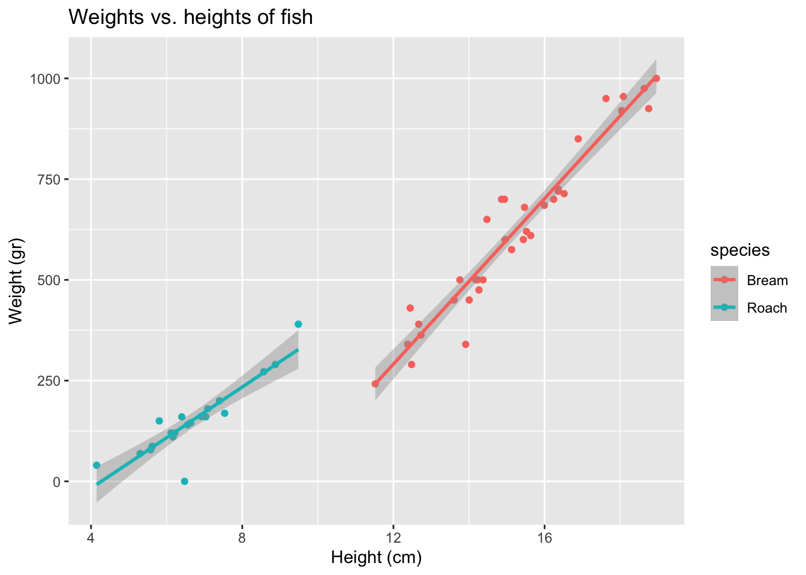
Adding a 3rd Variable
Does the relationship between heights and weights of fish change if we take into consideration species?
ggplot(fish,
aes(x = height, y = weight, color = species)) +
geom_point() +
geom_smooth(method = "lm") +
labs(
title = "Weights vs. heights of fish",
x = "Height (cm)",
y = "Weight (gr)"
)`geom_smooth()` using formula = 'y ~ x'